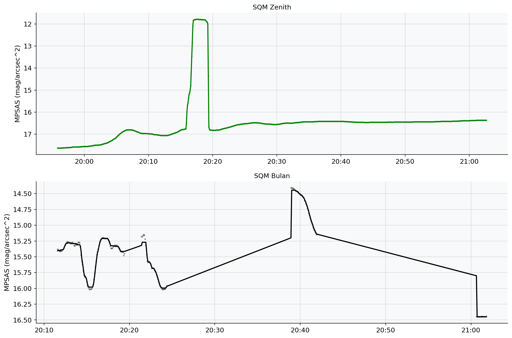

import pandas as pd
import re
import matplotlib.pyplot as plt
import matplotlib.dates as mdates
import matplotlib.gridspec as gridspec
from scipy import stats
from datetime import datetime
import ephem
import warnings
warnings.filterwarnings("ignore")
# ---Konfigurasi Matplotlib----------------------
plt.rcParams.update({
"figure.facecolor": "white",
"axes.facecolor": "#f8f9fa",
"axes.grid": True,
"grid.alpha": 0.4,
"axes.spines.top": False,
"axes.spines.right":False,
"font.size": 11,
})
ZENITH_COLOR = "#2563eb"
MOON_COLOR = "#d97706"
DIFF_COLOR = "#059669"Kalibrasi SQM
Kalibrasi SQM

Published by:
OAIL
Authors:
Naufal Aziz Ferdian
Co-Author Name
Executive Summary
This section provides a brief overview of the document’s key findings and recommendations.
1 Introduction
This is the introduction section of your document.
1.1 Purpose
Explain the purpose of this document.
1.2 Scope
Define the scope and boundaries.
2 Background
Provide relevant background information.
3 Main Content
3.1 import library
FILE_ZENITH = "KalibrasiSQMLaptopNaufal(Zenith).csv"
FILE_BULAN = "atikah/4.dat"
# Koordinat lokasi pengamatan
LAT_OBS = "-5.21375"
LON_OBS = "105.18512"
ELEV_OBS = 98 # mdpldfbulan = pd.read_csv("atikah/4.dat",
sep=";",
header = None,
skiprows=37,
names=["datetimes_utc", "datetime_local", "temp_c", "counts", "hz", "mpsas"]
)
# Konversi data
dfbulan['mpsas_smooth'] = dfbulan['mpsas'].rolling(window=12, center=True, min_periods=3).median()
dfbulan['timestamp'] = pd.to_datetime(dfbulan['datetime_local'], format = "%Y-%m-%dT%H.%M.%S.%f")
dfbulan.head()| datetimes_utc | datetime_local | temp_c | counts | hz | mpsas | mpsas_smooth | timestamp | |
|---|---|---|---|---|---|---|---|---|
| 0 | 2026-03-03T13.11.35.371 | 2026-03-03T20.11.35.371 | 26.1 | 6788 | 67 | 15.38 | 15.405 | 2026-03-03 20:11:35.371 |
| 1 | 2026-03-03T13.11.40.121 | 2026-03-03T20.11.40.121 | 26.1 | 6864 | 67 | 15.39 | 15.400 | 2026-03-03 20:11:40.121 |
| 2 | 2026-03-03T13.11.45.110 | 2026-03-03T20.11.45.110 | 26.1 | 6956 | 67 | 15.40 | 15.400 | 2026-03-03 20:11:45.110 |
| 3 | 2026-03-03T13.11.50.111 | 2026-03-03T20.11.50.111 | 26.1 | 7023 | 66 | 15.41 | 15.400 | 2026-03-03 20:11:50.111 |
| 4 | 2026-03-03T13.11.55.120 | 2026-03-03T20.11.55.120 | 26.1 | 7021 | 65 | 15.41 | 15.395 | 2026-03-03 20:11:55.120 |
3.1.1 SQM Zenith
dfzenith = pd.read_csv("KalibrasiSQMLaptopNaufal(Zenith).csv",
sep=",",
header = None,
names=["timestamp", "payload"]
)
# Eksttrak
dfzenith[["mpsas", "hz", "counts", "exposure_s", "temp_c"]] = dfzenith["payload"].str.extract(
r"([\d.]+)m,\s*([\d.]+)Hz,\s*([\d.]+)c,\s*([\d.]+)s,\s*([\d.]+)C"
)
# Konversi Data
dfzenith["timestamp"] = pd.to_datetime(dfzenith["timestamp"])
dfzenith["mpsas"] = dfzenith["mpsas"].astype(float)
dfzenith["hz"] = dfzenith["hz"].astype(float)
dfzenith["counts"] = dfzenith["counts"].astype(float)
dfzenith["exposure_s"] = dfzenith["exposure_s"].astype(float)
dfzenith["temp_c"] = dfzenith["temp_c"].astype(float)
dfzenith = dfzenith.drop(columns=["payload"])
dfzenith['mpsas_smooth'] = dfzenith['mpsas'].rolling(window=12, center=True, min_periods=3).median()
dfzenith.head()| timestamp | mpsas | hz | counts | exposure_s | temp_c | mpsas_smooth | |
|---|---|---|---|---|---|---|---|
| 0 | 2026-03-03 19:55:49.299154 | 17.57 | 9.0 | 53493.0 | 0.116 | 28.0 | 17.63 |
| 1 | 2026-03-03 19:55:54.299735 | 17.63 | 8.0 | 56358.0 | 0.122 | 28.0 | 17.63 |
| 2 | 2026-03-03 19:55:59.300164 | 17.63 | 8.0 | 56672.0 | 0.123 | 28.0 | 17.63 |
| 3 | 2026-03-03 19:56:04.300700 | 17.63 | 8.0 | 56336.0 | 0.122 | 28.0 | 17.63 |
| 4 | 2026-03-03 19:56:09.301127 | 17.63 | 8.0 | 56321.0 | 0.122 | 28.0 | 17.63 |
3.2 Visualisasi
fig, (ax1, ax2) = plt.subplots(2, 1, figsize=(12, 8), sharex = False)
# Panel 1
ax1.scatter(dfzenith['timestamp'], dfzenith['mpsas_smooth'], s=3, alpha=0.3, color='GREEN')
ax1.plot(dfzenith['timestamp'], dfzenith['mpsas_smooth'], color='GREEN', lw=1.8)
ax1.set_title("SQM Zenith", fontsize=11)
ax1.set_ylabel("MPSAS (mag/arcsec^2)")
ax1.invert_yaxis()
ax1.xaxis.set_major_formatter(mdates.DateFormatter("%H:%M"))
# Panel 2
ax2.scatter(dfbulan['timestamp'], dfbulan['mpsas'], s=3, alpha=0.3, color='BLACK')
ax2.plot(dfbulan['timestamp'], dfbulan['mpsas_smooth'], color='BLACK', lw=1.8)
ax2.set_title("SQM Bulan", fontsize=11)
ax2.set_ylabel("MPSAS (mag/arcsec^2)")
ax2.invert_yaxis()
ax2.xaxis.set_major_formatter(mdates.DateFormatter("%H:%M"))
plt.tight_layout()